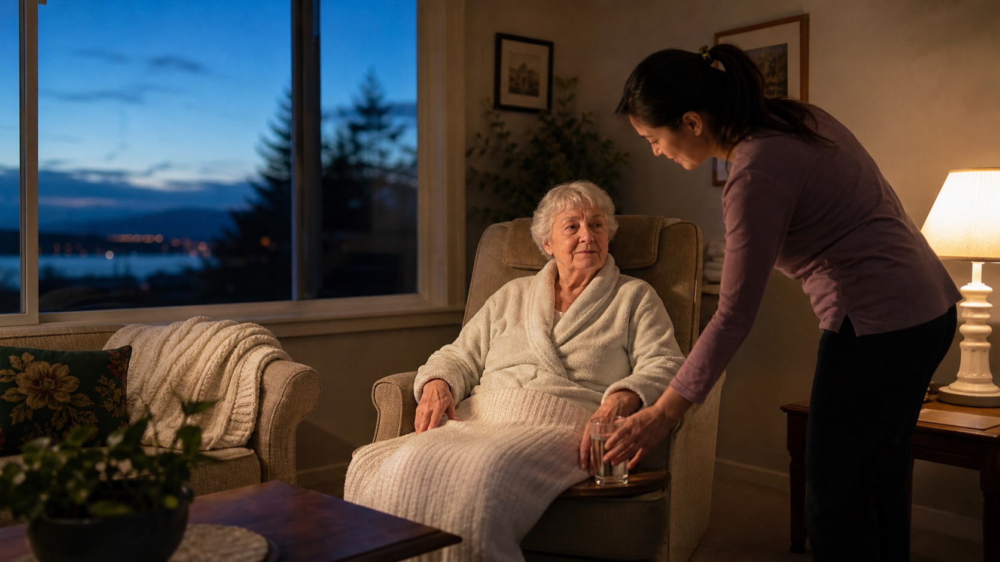

Decision guide
Awake Overnight vs. Sleeping Overnight vs. 24-Hour Home Care
Awake overnight care means someone stays awake to provide expected help through the night.
Read the guideDifferent coverage models for different needs
Some people need a caregiver who stays awake through the night. Others may be suited to an arrangement that includes agreed rest, while continuous 24-hour care usually involves rotating caregivers and planned handoffs. We will explain the differences before your family decides.
Care needed soon? Call to ask about current availability.

Could this help your family?
What support can look like
How the nurse-led approach supports this care
A nurse may help clarify health concerns or care instructions that affect the night, but most overnight support is not automatically nursing care. Your family should know who will be in the home, whether that person remains awake and which tasks require a nurse.
Clear expectations
A simple way to begin
Share what the person wants, what feels harder and when help may be needed.
We will explain which kinds of support may be worth considering.
Your family will know what a caregiver, nurse or other professional would provide.
Let us know when something changes so the support can be looked at again.
Clear answers
The caregiver remains awake because assistance or observation may be needed during the night. Before care begins, your family should understand the usual tasks, frequency of help and what happens if needs increase.
No. Live-in or sleeping arrangements include defined rest periods; continuous 24-hour care generally uses rotating workers.
Cost depends on whether care is awake, sleeping or continuous, as well as the hours, level of support, staffing and schedule. Ask for a written explanation of what the arrangement includes and any minimum hours.
Learn before deciding
These guides explain what to ask, what to plan for and how to make care decisions with clearer expectations.
Decision guide
Awake overnight care means someone stays awake to provide expected help through the night.
Read the guideDecision guide
Caregiver strain can show up as persistent exhaustion, disrupted sleep, missed medical care, irritability, isolation, difficulty working or a growing sense that one person is holding the entire plan together.
Read the guideDecision guide
Dementia care at home works best when support is built around the person’s familiar routines, communication style, abilities and known risks.
Read the guideA practical first step
Start with what is happening at home, who is already helping and what would make the biggest difference. We can explain the options and confirm current availability for your location and timing.